|
NASA World Wind
Java provides next-generation 3-D virtual globe technology for
applications written in the Java programming language. It supplies a
suite of open-source components that developers include in their own
applications, providing virtual globe functionality to any application
that can benefit from it. World Wind Java's components perform as well
as, or better than, any other known implementation and utilize the
OpenGL API for 3-D graphics via JOGL. See WWJ Technical Lead Tom
Gaskins' JavaOne
2007 presentation on World Wind Java and the DiSTI Corporation's
F-16 flight simulator
built using World Wind Java.
|
 MADLIX lets users insert
3D-content in web pages, blogs, Google pages, community presentations
and more. MADLIX is JOGL-powered and runs smoothly inside all
Java-enabled browsers, with no need for custom plug-ins or application
installation. The on-line gallery
features high-quality content ready for insertion. MADLIX is
accompanied by the MADLIX exporter tool enabling 3D artists to
directly export their 3D artwork from Autodesk Maya to the MADLIX
gallery. The exporter features pre-view functionality as well as a
standalone viewer, supporting the MADLIX file format and the open
standard file format COLLADA. MADLIX lets users insert
3D-content in web pages, blogs, Google pages, community presentations
and more. MADLIX is JOGL-powered and runs smoothly inside all
Java-enabled browsers, with no need for custom plug-ins or application
installation. The on-line gallery
features high-quality content ready for insertion. MADLIX is
accompanied by the MADLIX exporter tool enabling 3D artists to
directly export their 3D artwork from Autodesk Maya to the MADLIX
gallery. The exporter features pre-view functionality as well as a
standalone viewer, supporting the MADLIX file format and the open
standard file format COLLADA.
|
|
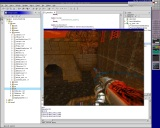Jake2 is a port
of id Software's GPL'd Quake II engine from C to Java done by bytonic software. You can run the game
via Java Web
Start with no manual installation on all of JOGL's
supported platforms.
|
 RaceView
from NASCAR / NEXTEL, part of the TrackPass package, puts
you in the race. Control the virtual camera angle, listen to the
driver and team, and see crucial statistics and times, all in real
time as the race goes on. RaceView uses JOGL for its 3D rendering. RaceView
from NASCAR / NEXTEL, part of the TrackPass package, puts
you in the race. Control the virtual camera angle, listen to the
driver and team, and see crucial statistics and times, all in real
time as the race goes on. RaceView uses JOGL for its 3D rendering.
|
|
Sharendipity enables creative people to build and
distribute software regardless of their programming prowess. Its goal
is to provide a basic platform with which users can build and share a
broad array of application components in such a way that they can be
extended, interchanged and plugged together to build full
applications. The authors anticipate a market to evolve around these
components where users can buy and sell their creations - whether it
is a full application, a unique effect, or an individual object
behavior. Sharendipity is currently deployed via Java within the
Facebook platform and uses JOGL for hardware accelerated rendering.
|
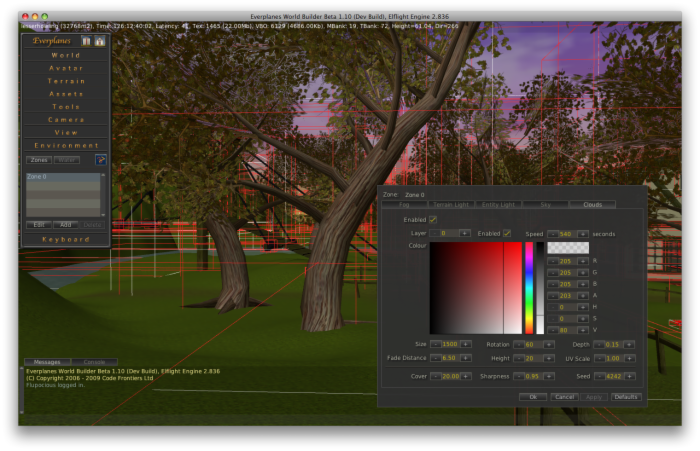The Elflight Engine is a high
performance 3D streaming game engine. It has been designed from the
ground up for use over the World Wide Web. The streaming aspect of the
engine allows a near "instant play" experience for the gamer. No
massive downloads and no massive updates! The technology is
particularly well suited to the development of MMOs and virtual
worlds. The Elflight Engine uses JOGL to access the OpenGL API.
|
|
The Fusion Framework enables Swing
components to be extended with 3D content via JOGL. In general the 3D
content will show up in layers on top of the corresponding Swing
component. Many utility functions are integrated to help the developer
build components. For example, the 3D content may be calibrated to the
corresponding component's bounds. In addition, the system provides a
simple scenegraph, Swing-like mouse interaction, and low-level
animation support, as well as GLSL shaders and .obj file loading. The
demo page contains several Java Web Start applications which
demonstrate the abilities of the framework; please fill out the web
form to help evaluate the components' usefulness.
|
The
NetBeans OpenGL Pack provides an easy to use OpenGL development
environment integrated into NetBeans. It supplies modules like an GLSL
shader editor, hardware compiler/linker integration and tools for
displaying hardware information. The pack ships ready to run JOGL (JSR
231) demo projects and all OpenGL samples of the OpenGL Programming
Guide (also known as the Red Book).
|
|
Shwup is a new P2P toy for
sharing photos that uses JOGL for all its rendering. Photos and text
that you drag-and-drop into it instantly shows up and gets teleported
to other users across the world running Shwup. Accompanying your
photos are slick 3D motion graphics that dance to the beats of the
music that you're playing. Welcome to Post-Modern P2P Broadcasting!
|
 Art of
Illusion is a free, open source 3D modelling and rendering
studio. Many of its capabilities rival those found in commercial
programs. Some of the highlights include subdivision surface based
modelling tools, skeleton based animation, and a graphical language
for designing procedural textures and materials. It uses JOGL for
real-time OpenGL rendering in its modeling views. Art of
Illusion is a free, open source 3D modelling and rendering
studio. Many of its capabilities rival those found in commercial
programs. Some of the highlights include subdivision surface based
modelling tools, skeleton based animation, and a graphical language
for designing procedural textures and materials. It uses JOGL for
real-time OpenGL rendering in its modeling views.
|
|
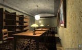Avengina is a
realtime 3D graphics engine which is designed for the execution as a
Java applet. Alternatively it can be launched as a Java Webstart
application outside the browserwindow. The software provides the
possibility to exhibit texts and images in virtual
galleries. Regarding the control and behaviour of the avatar it's
redolent of a game engine. The graphics rendering system bases on
per-pixel lighting and supports normal mapping, specular lighting and
stencil volume shadows. Avengina uses JOGL for realtime rendering.
|
chronotext is a series
of visual design experiments involving animated text and 3D objects
and surfaces. Several examples can be run on-line via Java Web
Start. See the latest
experiments of mapping text on to real 3D surfaces.
|
|
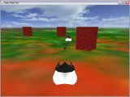Duke
Bean'Em is the demonstration program from Erik Hellman's JavaOne
2007 technical session. This presentation demonstrates how you can
write a simple 3-D game by using the Java programming language, JOGL,
and free tools and 3-D models. It also covers the basics of OpenGL and
3-D graphics as well as various technologies, libraries, tools, and
patterns that are useful for 3-D application development on the Java
platform.
|
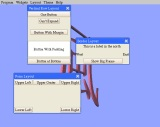FengGUI is a graphical
user interface (GUI) application programming interface (API) based on
OpenGL. FengGUI provides all typical GUI components like buttons,
sliders, trees, text areas, frames, tabs, etc. which are required to
build a complete GUI system. Since it is based on OpenGL, FengGUI fits
well in multimedia and game environments.
|
 GL Studio is an object oriented rapid application
development tool that allows a user to graphically combine
photographs, 3D models and behavior logic to create advanced 2D and 3D
human machine interfaces. GL Studio generates Java or C++ source code
which can then be integrated into the user’s application as a user
interface. Java
code generated with GL Studio can be deployed using
javax.swing.JPanel, java.awt.Canvas and JavaBeans. GL Studio uses
OpenGL for rendering and GL Studio for Java uses the JOGL API. GL Studio is an object oriented rapid application
development tool that allows a user to graphically combine
photographs, 3D models and behavior logic to create advanced 2D and 3D
human machine interfaces. GL Studio generates Java or C++ source code
which can then be integrated into the user’s application as a user
interface. Java
code generated with GL Studio can be deployed using
javax.swing.JPanel, java.awt.Canvas and JavaBeans. GL Studio uses
OpenGL for rendering and GL Studio for Java uses the JOGL API.
|
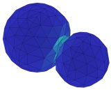Impact is a
complete finite element suite including preprocessor, solver and
postprocessor which is useable for simulating dynamic events such as
car crashes or stamping of metal sheets. The suite allows 3D
modelling, solving and viewing of simulation results, all in OpenGL
accelerated graphics through the use of JOGL.
|
|
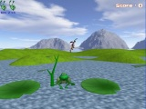Jack
Flowers is a 3D platform action and adventure game under
development. Jack is a flower collector (a kind of mutant beetle) who
loves flowers so much that he can't help collecting them. Your goal
through the game is to help Jack pick up flowers to progress through
vegetal levels.
|
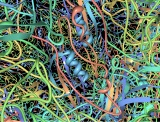The Molecular Biology Toolkit is a
Java-based protein visualization and analysis toolkit. The toolkit
provides classes for efficiently loading, managing and manipulating
protein structure and sequence data. The MBT also provides a rich set
of graphical 3D and 2D visualization components which can be easily
"plugged together" to produce applications having sophisticated
graphical user interfaces. Some MBT-based visualization tools are ProteinWorkshop (webstart
demo), EpitopeViewer
(webstart
demo), and Sirius.
|
|
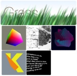Processing is an open
source programming language and environment for people who want to
program images, animation, and sound. It is used by students, artists,
designers, architects, researchers, and hobbyists for learning,
prototyping, and production. Processing is developed by artists and
designers as an alternative to proprietary software tools in the same
domain. It uses JOGL for its hardware accelerated 3D rendering
support.
|
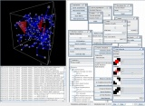SpeckSim is a
behaviour-level simulator for networks of small, resource-constrained
devices with sensing, computation and communication
capabilities. Intended as a testbed for distributed algorithms, the
main design goal was ease of extension. To this end, almost all aspect
of the simulator can be customised: Node behaviour, communication
characteristics, placement and motion; visualisation rendering and
interaction and statistic generation.
|
|
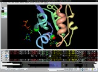With STRAP you can align your proteins by
sequence and 3D-structure. STRAP simultaneously displays
3d-structures, amino acid sequence alignment and nucleotide sequences.
It has powerful annotation features.
|
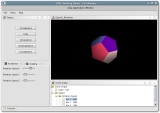VLDocking is
a set of Java components that helps the Swing developer to build
applications with Docking capabilities, and even raise existing
applications to higher standards. It supports docking via drag and
drop, enhanced toolbars, closable tabs, and more. It fully supports
heavyweight components such as JOGL's GLCanvas in a docking
environment.
|